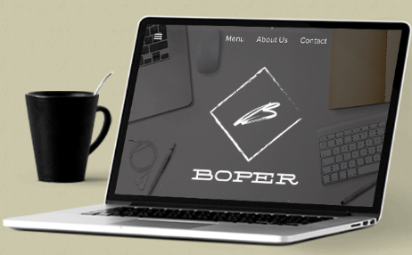

Sistemas Informáticos
Automatización de almacenes: Utilizamos Hand Helds o computadoras de mano y radio frecuencia,Toma de inventarios de almacenes y activos fijos: Por conteos, ciego o contrastado con stock,
Gestión y Contabilidad de Costos Industriales: Sinceramiento y visualización de los costos,
Control de Activos Fijos: Gestión, depreciación, contabilización.
Consultoría Informática
Diagnóstico informático empresarialAsesoria Informática empresarial
Desarrollo informático a medida
Monitoreo Informático empresarial
